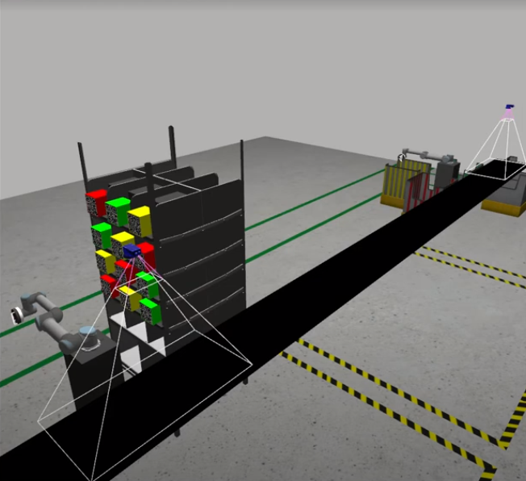
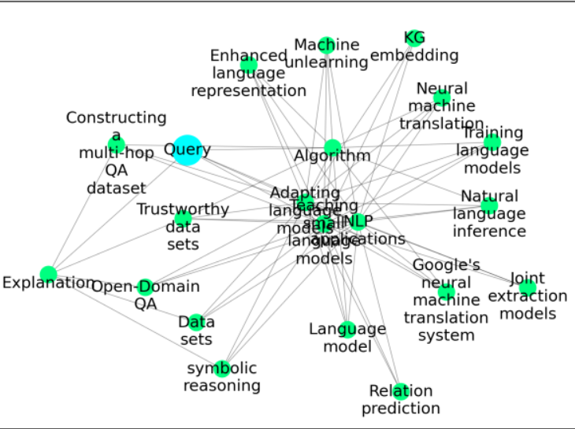
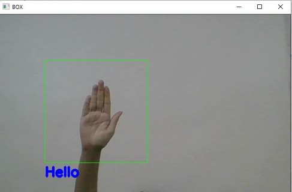
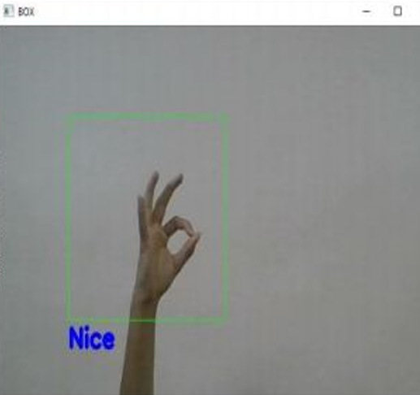
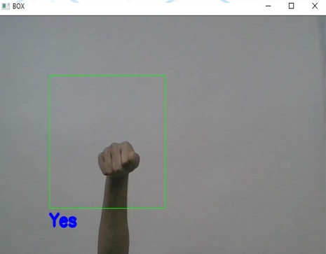

Swapnil Puranik
Home
About
Education
Experience
Projects
Contact
Menu
Home
About
Education
Work Experience
Sign Up
Close
Projects
Robotics, Machine Learning and NLP Projects
Warehouse Automation System
This project uses a multi-robot (UR5) system to rapidly search, navigate and segregate multiple objects based on color.
First robotic arm navigates to the object placed on shelves, picks it up and places on the conveyor belt
Another robotic arm, at the end of conveyor, detects the object, picks it up, and depending on the color of the object, puts in the respective colored bin, thus automating the manual process
The framework used was ROS. RVIZ and Gazebo was used for simulation of the overall set up.
My Work focused on development and testing of SLAM and Perception framework.

LLM Hallucination Reduction using Knowledge Graph Comparison
This project aimed at reducing the incorrect/ out-of-context information (Hallucinations) that LLMs generate.
"AutoKG" and "REBEL" are the 2 Knowledge Graph(KG) generating tools that were compared.
Both the frameworks take text as input and generate a KG with nodes and edges
Upon comparing the KGs, they were fed into ChatGPT by calling the API provided by chatGPT.
When tested with same inputs, It was observed that ChatGPT responded correctly when provided with KG generated by AutoKG

Visual Cognition Assistance
This system was developed on JETSON Nano. It aimed at providing error free navigation aid to the visually impaired.
Developed a ML model to detect and classify objects in the data provided in real-time
The objects detected were classified and an algorithm was implemented to estimate the distance of those objects along with their position relative to the user
All the information (classified object, distance, position) was analysed and converted into audio signal which was given to the user
The user was also provided with optimal path that should be taken in order to avoid hitting the objects
Real-time Gesture to Speech Conversion
Developed an AI based system to facilitate seamless communication between a visually impaired user and the environment by processing live video to convert the gestures done in sign language into Audio output.
When the user performed any gesture in sign language, the model detected the hands, did segmentation to remove the background and focused only on detected part.
The detected gesture was then compared with the internal database of gestures maintained by the system.
When a match was found in the database, the gesture was converted into Audio signal so that people who dont know sign language can still understand the user, thus facilitating seamless communication



Authorship attribution using ngram language models
This project explored the authorship attribution problem, i.e. determining the author of a given text using both generative and discriminative approaches in Natural Language Processing
Implemented n-gram language models using NLTK for a generative classifier and applied various smoothing techniques, including backoff and interpolation, to improve model accuracy.
The system was provided with text files from 4 authors and a language Model was developed for each author to analyze the texts and a dictionary was maintained to store the vocabulary
When given a test set (new, unseen text), the system would analyze the writing style and predict which author it most likely belonged to.
Image to Audio Converter
The system was built to successfully extract text from provided input image.
The provided input image was scanned and passed through a series of steps for processing.
The Processing ensured to extract only the text, while ignoring any images, any out-of-context texts or unwanted noise.
The final processed was then converted into Audio Signal using Google Text-to_Speech module